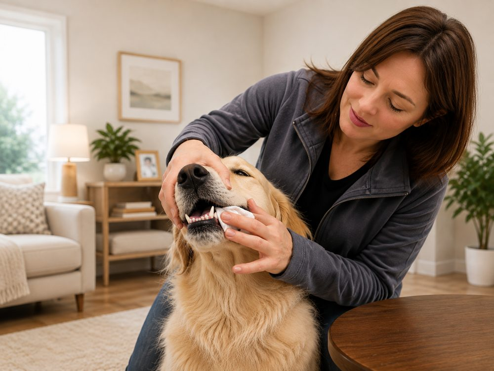

20% halitosis reduction
Without proper care, odor-producing bacteria can build up in a dog’s mouth. Dogs in a clinical study with VETRADENT® Dental Wipes experienced up to a 20% reduction in halitosis.*
*Study summary available upon request.